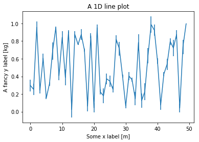
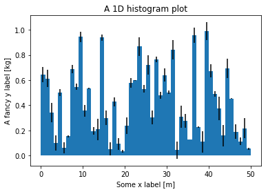
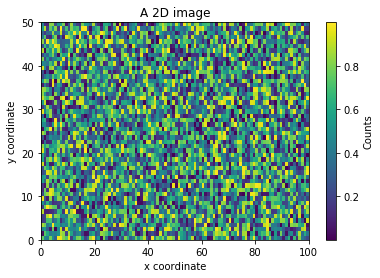
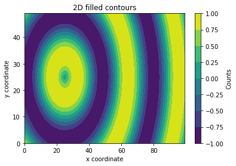
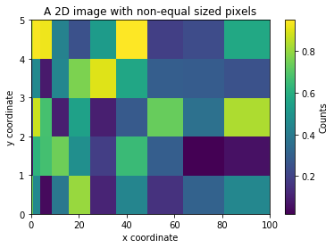
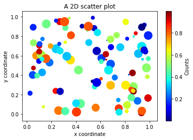
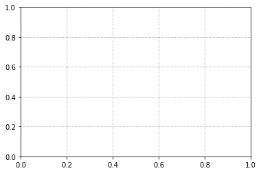
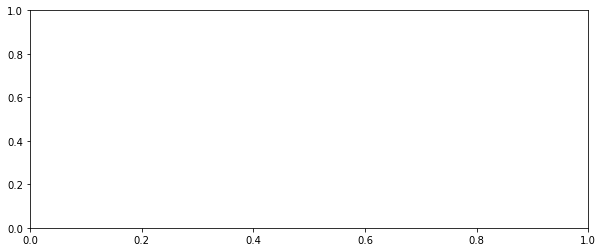

Error-bar plot
import numpy as np
import matplotlib.pyplot as plt
N = 50
x = np.arange(N)
y = np.random.rand(N)
e = 0.1*np.random.rand(N)
plt.errorbar(x,y,yerr=e)
plt.xlabel("Some x label [m]")
plt.ylabel("A fancy y label [kg]")
plt.title("A 1D line plot")
plt.show()
|  |
1D histogram plot
import numpy as np
import matplotlib.pyplot as plt
N = 50
x = np.arange(N+1)
y = np.random.rand(N)
e = 0.1*np.random.rand(N)
plt.bar(0.5*(x[:-1] + x[1:]), y,
width=np.ediff1d(x),yerr=e)
plt.xlabel("Some x label [m]")
plt.ylabel("A fancy y label [kg]")
plt.title("A 1D histogram plot")
plt.show()
|  |
2D image
import numpy as np
import matplotlib.pyplot as plt
N = 100
M = 50
x = np.arange(N+1)
y = np.arange(M+1)
z = np.random.rand(M, N).astype(np.float64)
im = plt.imshow(z, origin="lower",
extent=[x[0], x[-1], y[0], y[-1]], aspect="auto",
cmap="viridis")
cb = plt.colorbar(im)
cb.ax.set_ylabel("Counts")
plt.xlabel("x coordinate")
plt.ylabel("y coordinate")
plt.title("A 2D image")
plt.show()
|  |
2D filled contours
import numpy as np
import matplotlib.pyplot as plt
N = 100
M = 50
xx = np.arange(N, dtype=np.float64)
yy = np.arange(M, dtype=np.float64)
x, y = np.meshgrid(xx, yy)
b = N/20.0
c = M/2.0
r = np.sqrt(((x-c)/b)**2 + ((y-c)/b)**2)
z = np.sin(r)
contf = plt.contourf(x, y, z, cmap="viridis")
cb = plt.colorbar(contf)
cb.ax.set_ylabel("Counts")
plt.xlabel("x coordinate")
plt.ylabel("y coordinate")
plt.title("2D filled contours")
plt.show()
|  |
2D image non-uniform pixels
import numpy as np
import matplotlib.pyplot as plt
N = 10
M = 5
x = np.arange(N+1)**2
y = np.arange(M+1)
z = np.random.rand(M, N).astype(np.float64)
pcmesh = plt.pcolormesh(x, y, z, cmap="viridis")
cb = plt.colorbar(pcmesh)
cb.ax.set_ylabel("Counts")
plt.xlabel("x coordinate")
plt.ylabel("y coordinate")
plt.title("A 2D image with non-equal sized pixels")
plt.show()
|  |
2D scatter
import numpy as np
import matplotlib.pyplot as plt
N = 100
x = np.random.rand(N).astype(np.float64)
y = np.random.rand(N).astype(np.float64)
z = np.random.rand(N).astype(np.float64)
s = 300.0*np.random.rand(N).astype(np.float64)
scat = plt.scatter(x, y, c=z, cmap="jet", s=s)
cb = plt.colorbar(scat)
cb.ax.set_ylabel("Counts")
plt.xlabel("x coordinate")
plt.ylabel("y coordinate")
plt.title("A 2D scatter plot")
plt.show()
|  |
Grid on axes
import matplotlib.pyplot as plt fig = plt.figure() ax1 = fig.add_subplot(111) ax1.grid(True, color='gray', linestyle="dotted") ax1.set_axisbelow(True) plt.show() |  |
Set figure size and aspect ratio
import matplotlib.pyplot as plt fig = plt.figure(figsize=(10, 4)) ax1 = fig.add_subplot(111) plt.show() |  |